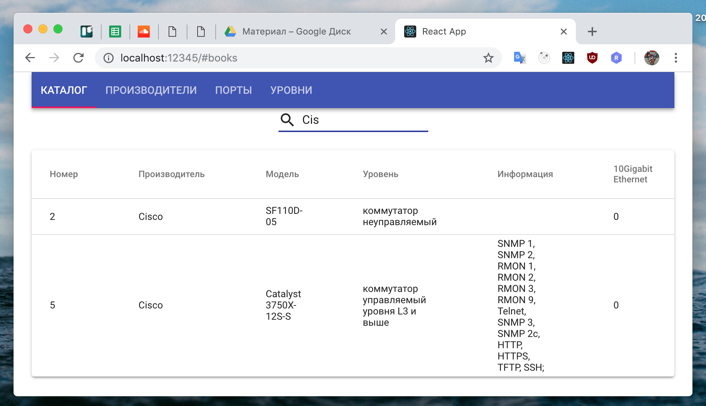
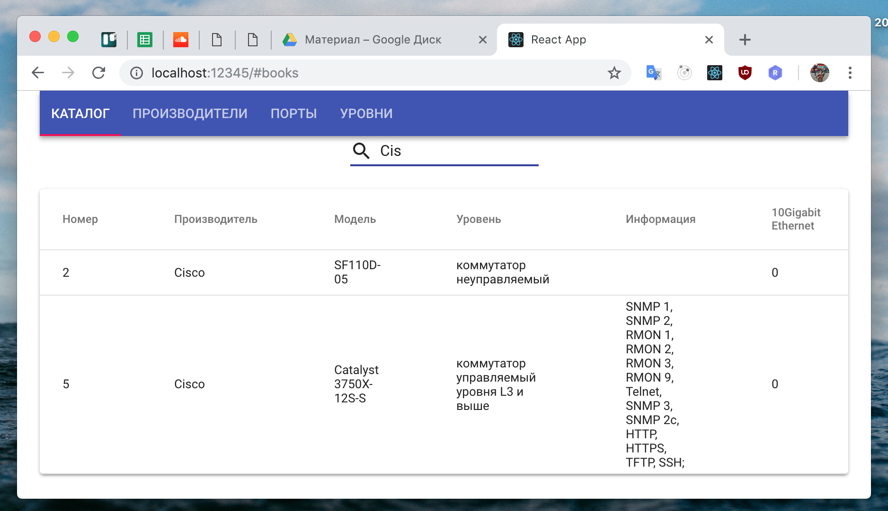
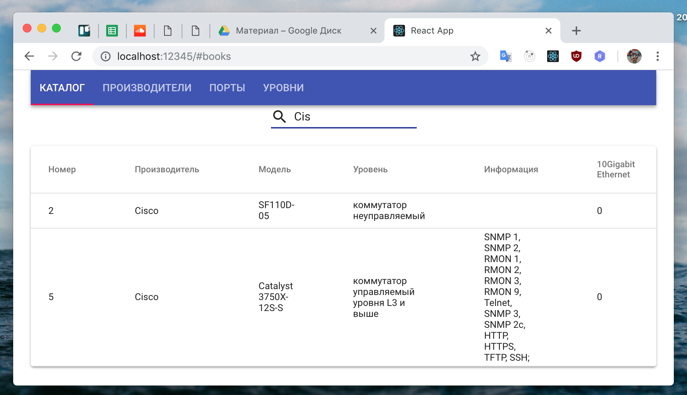

Онлайн версия доступна по ссылке
Для этого нам потребуется изменить два файла
frontend/src/Table.jsfrontend/src/Tab.jsВ файле frontend/src/Table.js нужно динамически отображать колонки исходя из параметра columns и rows.
Смотрите исходный код файлов, пожалуйста, для получения более детальной информации.
{columns.map(item => (<TableCell>{item.title}</TableCell>))}{rows.map(row => (
<TableRow key={row.id}>
{columns.map((item, index) => (index === 0 ?
(<TableCell key={item.name} component="th" scope="row" >{row[item.name]}</TableCell>) :
(<TableCell key={item.name}>{item.formatter ? item.formatter(row[item.name]) : row[item.name]}</TableCell>)
))}
</TableRow>
))}А в файле frontend/src/Tab.js нужно добавить поиск и загрузку данных с сервера, а так же передачу параметров columns и rows в компонент Table. Смотрите исходный код файлов, пожалуйста, для получения более детальной информации.
buildUrl(entity, search, base = 'http://localhost:30562/') {
return `${base}${entity}${search ? '?search=' : ''}${search || ''}`;
}
async handleResult(index = 0, search) {
const rows = await this.download(index, search);
const columns = this.props.columns[index];
this.setState({
...this.state,
rows,
columns,
})
}
async download(index = 0, search) {
const urls = ['book', 'reader', 'issue'];
const url = this.buildUrl(urls[index], search);
const result = await fetch(url);
return result.json();
}
handleChangeTab = async (event, index) => {
await this.setState({ value: index });
this.handleResult(index);
};
componentDidMount = async () => {
this.handleResult();
};
handleChangeInput = async (event) => {
this.handleResult(this.state.value, event.target.value);
};render() {
const { classes } = this.props;
const { value, columns, rows } = this.state;
return (
<div className={classes.root}>
<AppBar position="static">
<Tabs value={value} onChange={this.handleChangeTab}>
<Tab label="Книги" href="#books"/>
<Tab label="Читатели" href="#readers"/>
<Tab label="Выдача книг" href="#issue"/>
</Tabs>
</AppBar>
<Input
id="input-with-icon-adornment"
onChange={this.handleChangeInput}
startAdornment={
<InputAdornment position="start">
<Search />
</InputAdornment>
}
/>
<Table columns={columns} rows={rows}/>
</div>
);
}docker-compose up --build
Ожидаем в консоли:
dboak-frontend | Starting up http-server, serving ./build
dboak-frontend | Available on:
dboak-frontend | http://127.0.0.1:8080
dboak-frontend | http://172.17.0.7:8080
dboak-frontend | Hit CTRL-C to stop the serverМожно будет проверить результат работы приложения в контейнере по адресу: http://localhost:32562
Тестируем все страницы

Тестируем поиск(данные загружаются с сервера в реальном времени)